Tally Hall
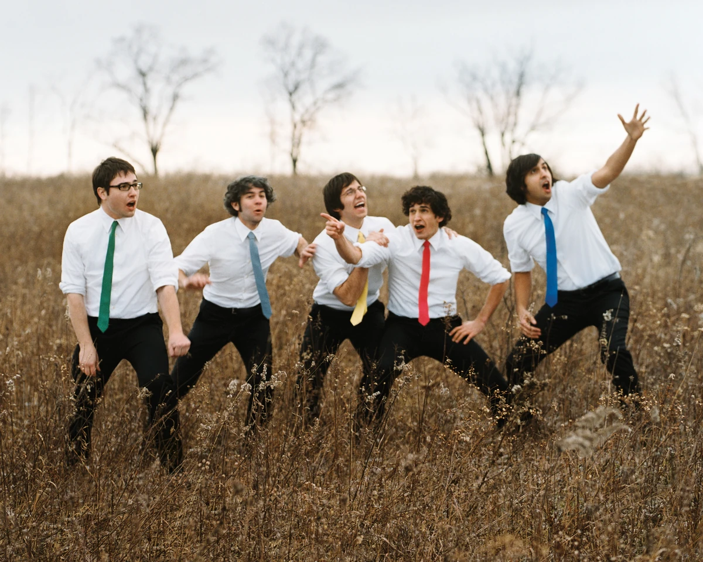
About Tally Hall
Tally Hall (as shown from left to right) is a band comprised of Andrew Horowitz (green tie), Ross Federman (grey tie), Rob Cantor (yellow tie), Joe Hawley (red tie), and Zubin Sedghi (blue tie). Bora Karaca later joined the band as an honorary 6th member as their orange tie.
TBR STANDS FOR TO BE RATED. This means tracks with TBR in front of them haven't actually been rated and instead have a dummy rating.
16. Just A Friend ★★★★★
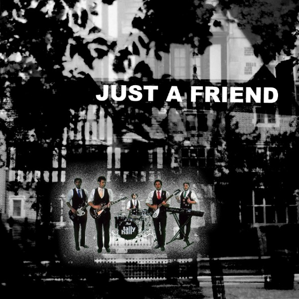
Just a Friend is the 1st single released by Tally Hall under Needlejuice Records.
- Just A Friend ★★★★★
- Mucka Blucka ★★★★★
- Dream ★★★★★
15. NEEDS TO BE RE-LISTENED TO!!! Cojum Dip ★★★★★
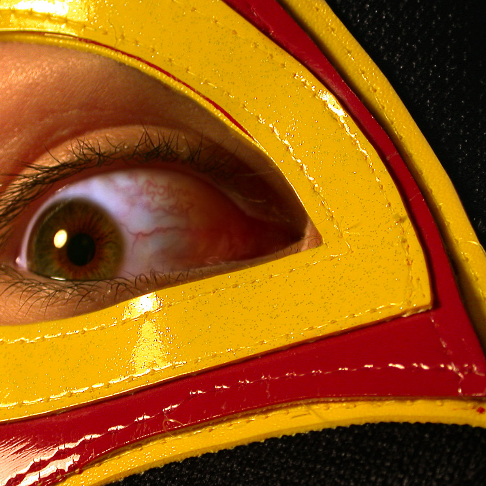
Cojum Dip is the only solo album made by honorary member Bora Karaca.
- Cell ★★★★★
- TBR 4-LOM ★★★★★
- TBR Reverse Mullet ★★★★★
- TBR Jabberwocky ★★★★★
- Waltz in E-major, Op. 15 "Moon Waltz" ★★★★★
- TBR Tap Tap Tap ★★★★★
- TBR Puzzle Dust ★★★★★
- 134340 Pluto ★★★★★
- Moon Waltz (Piano Version) ★★★★★
14.NEEDS TO BE RE-LISTENED TO!!! hawaii partii ★★★★★
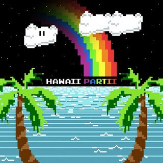
hawaii partii (not to be mistaken for Hawaii: Part II) by Miracle Musical (ミラクルミュージカル) is a collection of 8-bit chiptunes based on the Hawaii: Part II album.
- Heaven ★★★★★
- TBR Stranded Lullaby (8-Bit) ★★★★★
- TBR Labyrinth (8-Bit) ★★★★★
- TBR 宇宙ステーションのレベル7 (8-Bit) ★★★★★
- TBR Murders (8-Bit) ★★★★★
- TBR The Mind Electric (8-Bit) ★★★★★
- TBR White Ball (8-Bit) ★★★★★
- TBR Dream Sweet in Sea Major (8-Bit) ★★★★★
- TBR Continue? ★★★★★
13.NEEDS TO BE RE-LISTENED TO!!! Sketches 3D ★★★★★
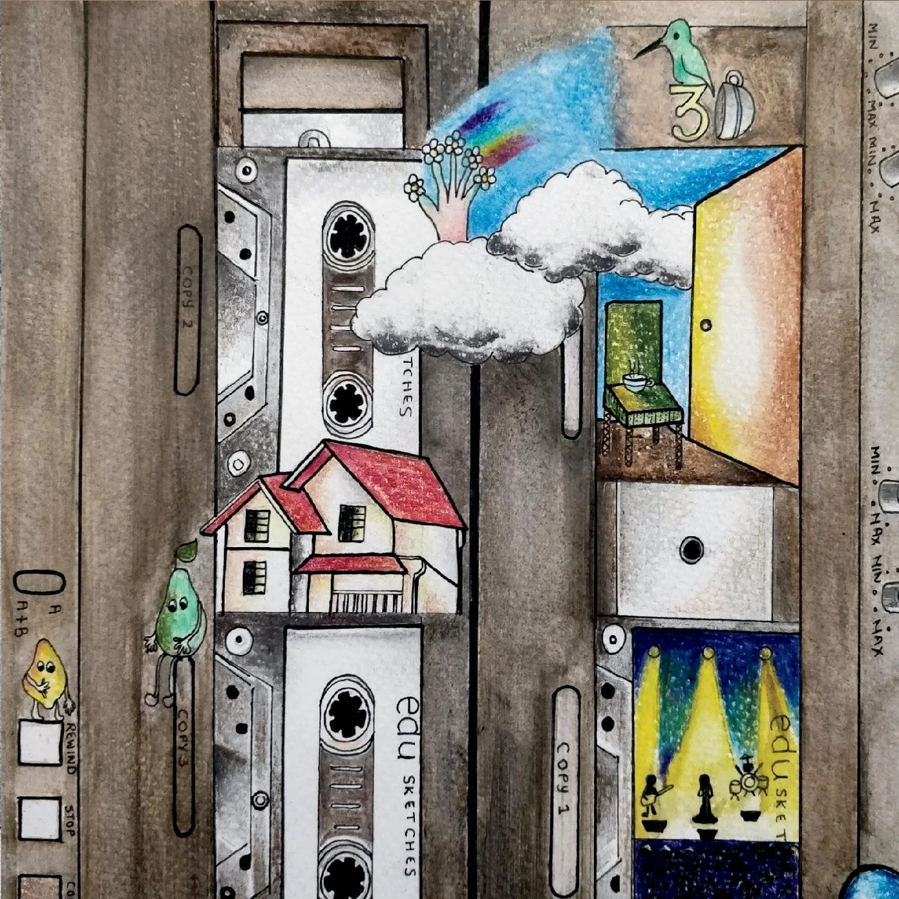
Sketches 3D is the only album by edu (who is Andrew Horowitz under a psuedonym).
- TBR miss melody ★★★★★
- TBR HEY YOU! ★★★★★
- TBR hummingbird ★★★★★
- TBR daisy fingers ★★★★★
- TBR Have a Nice Day! (interludinal) ★★★★★
- TBR lemons and pears ★★★★★
- TBR at the end ★★★★★
- TBR nowhere else ★★★★★
- TBR The Rainbow Connection ★★★★★
- TBR Tomorrow and Today ★★★★★
- TBR lemons and pears (Toy Orchestra Version) ★★★★★
- TBR Grandpa is Hiding ★★★★★
12. Not a Trampoline ★★★★★
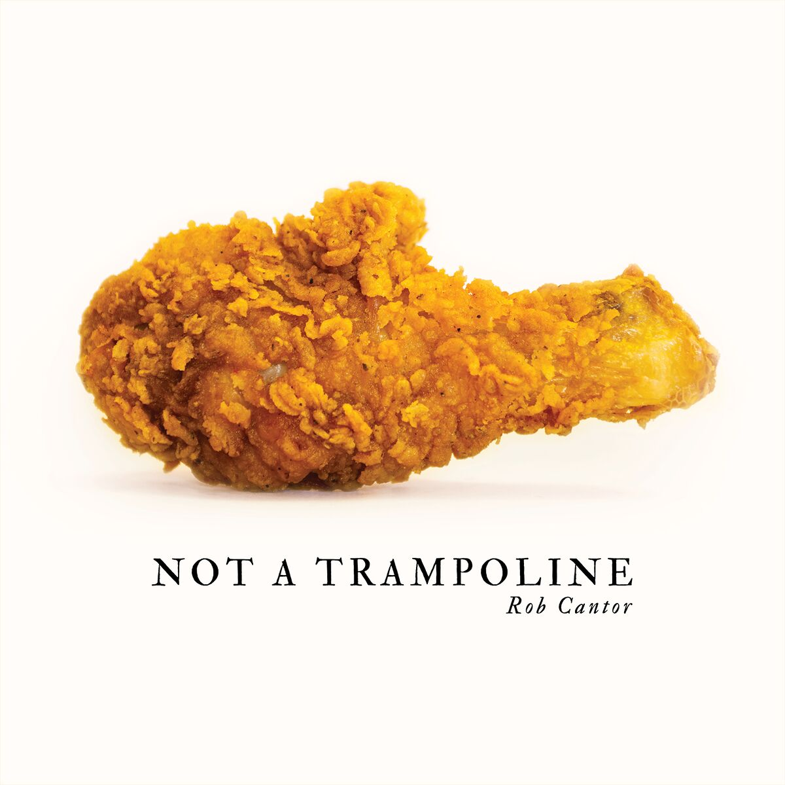
Not a Trampoline is the only album by Rob Cantor.
- TBR Ghost ★★★★★
- TBR Old Bike ★★★★★
- TBR Garden of Eden ★★★★★
- TBR The Rendezvous ★★★★★
- TBR I'm Gonna Win ★★★★★
- TBR All I Need Is You ★★★★★
- TBR Flamingo ★★★★★
- TBR La Telenovela ★★★★★
- TBR In Memoriam ★★★★★
- TBR Let Your Mother Know ★★★★★
- TBR Perfect ★★★★★
- TBR Lonely (But Not Alone) ★★★★★
11. Hawaii Part II: part ii ★★★★★
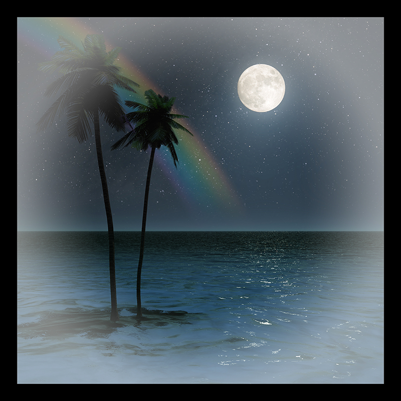
Hawaii Part II: part ii is a collection of demos from the Hawaii: Part II album by Miracle Musical (ミラクルミュージカル)
- TBR Introduction to the Snow (Instrumental) ★★★★★
- TBR Isle Unto Thyself (Instrumental) ★★★★★
- TBR Black Rainbows (Instrumental) ★★★★★
- TBR White Ball (Instrumental) ★★★★★
- TBR Murders (Instrumental) ★★★★★
- TBR 宇宙ステーションのレベル7 (Instrumental) ★★★★★
- TBR The Mind Eletric (Instrumental) ★★★★★
- TBR Labyrinth (Instrumental) ★★★★★
- TBR Time Machine (Instrumental) ★★★★★
- TBR Stranded Lullaby (Instrumental) ★★★★★
- TBR Dream Sweet in Sea Major (Instrumental) ★★★★★
- TBR Variations on a Cloud (Instrumental) ★★★★★
- TBR Introduction to the Snow (Demo) ★★★★★
- TBR Isle Unto Thyself (Demo) ★★★★★
- TBR Isle Unto Thyself (Wee-Oh) ★★★★★
- TBR Black Rainbows (A Capella Demo) ★★★★★
- TBR Black Rainbows (Chanting Tutorial) ★★★★★
- TBR White Ball (Piano Melody Demo) ★★★★★
- TBR White Ball (Bridge Demo) ★★★★★
- TBR White Ball (Solo Demo) ★★★★★
- TBR White Ball (Ad Libs) ★★★★★
- TBR White Ball (Raw Strings) ★★★★★
- TBR White Ball (Giggle) ★★★★★
- TBR Murders (Demo) ★★★★★
- TBR Murders (1949 Steinway Samples) ★★★★★
- TBR Murders (Vocal Effects) ★★★★★
- TBR 宇宙ステーションのレベル7 (Disco Chorus) ★★★★★
- TBR 宇宙ステーションのレベル7 ("Heaven") ★★★★★
- TBR The Mind Electric (Demo) ★★★★★
- TBR The Mind Electric (Demo 2) ★★★★★
- TBR The Mind Electric (Demo 3) ★★★★★
- TBR The Mind Electric (Demo 4) ★★★★★
- TBR The Mind Electric (Cojum Dip Instrumental) ★★★★★
- TBR The Mind Electric ("Help Me/Axon-Dendrite") ★★★★★
- TBR The Mind Electric ("Gott") ★★★★★
- TBR The Mind Electric ("Teslacoil" Synth) ★★★★★
- TBR The Mind Electric ("Simon" Synth) ★★★★★
- TBR The Mind Electric (Reamplification Effects) ★★★★★
- TBR The Mind Electric (Sample - Sam Ku West Harmony Boys - "Sunkist Hawaii") ★★★★★
- TBR The Mind Electric (Sample - Wolfgang Amadeus Mozart - Gloria - "Trinitatis") ★★★★★
- TBR Labyrinth (Chorus Demo) ★★★★★
- TBR Labyrinth (Royal Lions Chorus) ★★★★★
- TBR Labyrinth ("I Rewind") ★★★★★
- TBR Time Machine (Demo) ★★★★★
- TBR Time Machine (Demo 2) ★★★★★
- TBR Time Machine (Demo 3) ★★★★★
- TBR Stranded Lullaby (Demo) ★★★★★
- TBR Stranded Lullaby (Demo 2) ★★★★★
- TBR Stranded Lullaby (Demo 3) ★★★★★
- TBR Stranded Lullaby ("Ghost") ★★★★★
- TBR Stranded Lullaby (Sound Effects) ★★★★★
- TBR Dream Sweet in Sea Major (Demo) ★★★★★
- TBR Dream Sweet in Sea Major (Demo 2) ★★★★★
- TBR Dream Sweet in Sea Major (Electric Guitar) ★★★★★
10. Complete Demos ★★★★★
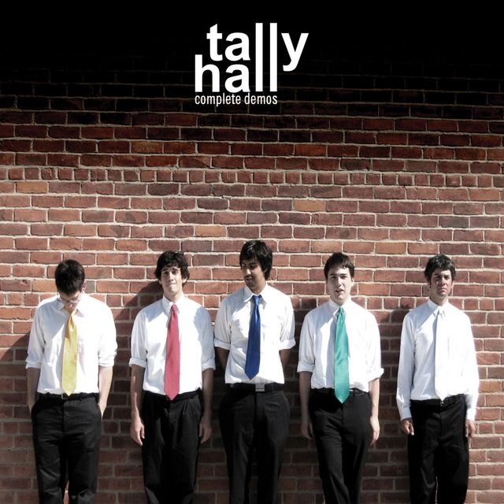
Complete Demos is the first compilation of demos by Tally Hall.
- TBR Good Day (Demo) ★★★★★
- TBR Greener (Demo) ★★★★★
- TBR Welcome to Tally Hall (Demo) ★★★★★
- TBR Just Apathy (Demo) ★★★★★
- TBR Two Wuv (Demo) ★★★★★
- TBR Stationary Love (Demo) ★★★★★
- TBR Banana Man (Demo) ★★★★★
- TBR (I Know) It's Just the Same (Demo) ★★★★★
- TBR Ruler of Everything (Demo) ★★★★★
- TBR Hidden in the Sand (Demo) ★★★★★
9. Joe Hawley Joe Hawley ★★★★★
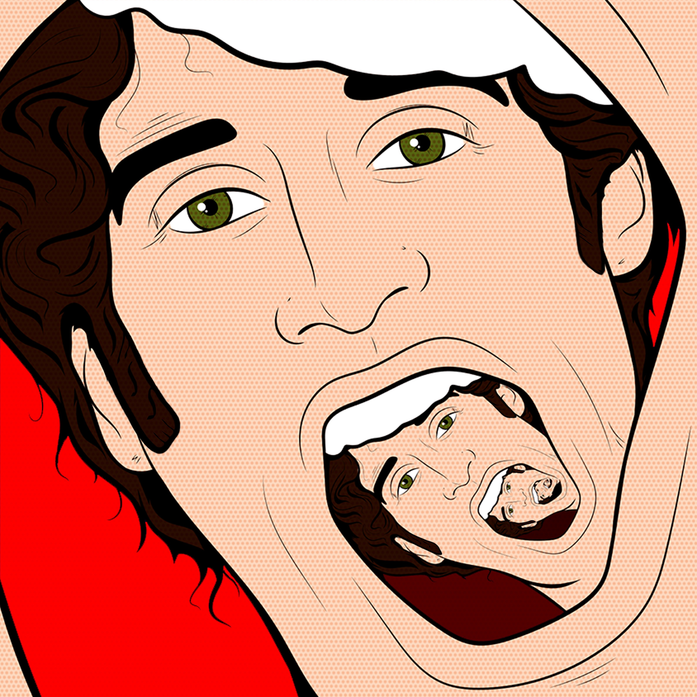
Joe Hawley Joe Hawley is the only solo album by Joe Hawley.
- TBR Joe Halwey Attacks ★★★★★
- TBR Black People White People ★★★★★
- TBR Bring Her Along ★★★★★
- TBR Crazy Food ★★★★★
- Rotary Park ★★★★★
- TBR Your Mother is a Basketball ★★★★★
- TBR Hoodz 'n the Woodz ★★★★★
- TBR The Apologue of Hot Rod Duncan ★★★★★
- TBR Aristotle's Denial ★★★★★
- TBR Bahimian Rap City ★★★★★
- TBR We Are In Space ★★★★★
- TBR Go To Bed ★★★★★
- TBR White Rabbit ★★★★★
8. Admittedly Incomplete Demos ★★★★★
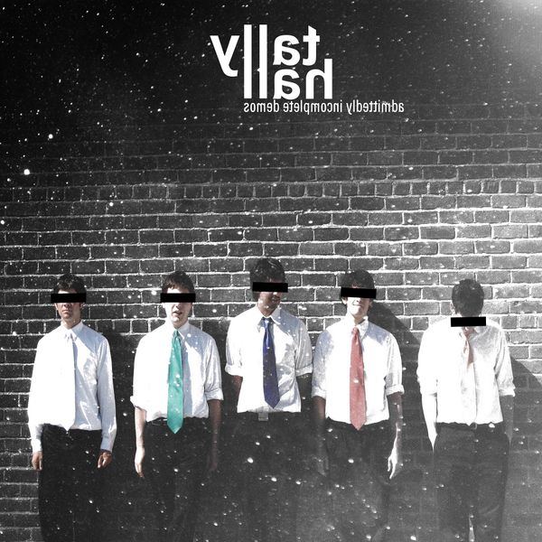
Admittedly Incomplete Demos is the second compilation of demos by Tally Hall.
- TBR Another Minute (Live at the Frieze Basement, December 2002) ★★★★★
- TBR Mobile Phone Premonition (Live at the Frieze Basement, December 2002) ★★★★★
- TBR Welcome to Tally Hall (Acoustic Demo) ★★★★★
- TBR Marvin's SFX - Bohemian Rhapsody (Sample) ★★★★★
- TBR Banana Man (Lounge Version) ★★★★★
- TBR Blind Pig Introduction (January 2008) ★★★★★
- TBR Spring and a Storm (Original Demo feat. Ryan Scott) ★★★★★
- TBR Two Wuv (Alternate Bridges) ★★★★★
- TBR The Whole World and You (Punk Rehearsal) ★★★★★
- TBR Just a Friend ★★★★★
- TBR Songy Song ★★★★★
- TBR Keep Up The Good Work! Theme ★★★★★
- TBR Sea Cucumber (Demo) ★★★★★
- TBR Tally Hall's Internet Show Theme ★★★★★
- TBR Spiced Rum Commercial (Demo) ★★★★★
- TBR You & Me (Zubin Lead Vocal Rehearsal) ★★★★★
- TBR Cannibal (Demo) ★★★★★
- TBR Who You Are (Demo) ★★★★★
- TBR Sacred Beast (Demo) ★★★★★
- TBR Hymn for a Scarecrow (Demo) ★★★★★
- TBR A Lady (Demo) ★★★★★
- TBR The Trap (Demo) ★★★★★
- TBR Turn the Lights Off (Alternate Bridge) ★★★★★
- TBR Out in the Twilight (Demo) ★★★★★
- TBR Fate of the Stars (Demo) ★★★★★
- TBR Light & Night (Demo) ★★★★★
- TBR Love Track (Rehearsal) ★★★★★
- TBR Go (Demo) ★★★★★
- TBR Color Be Gone (Demo) ★★★★★
- TBR The Minstrel Boy ★★★★★
- TBR Welcome to Tally Hall (Reprise) (Demo) ★★★★★
7. Candle on the Water ★★★★★
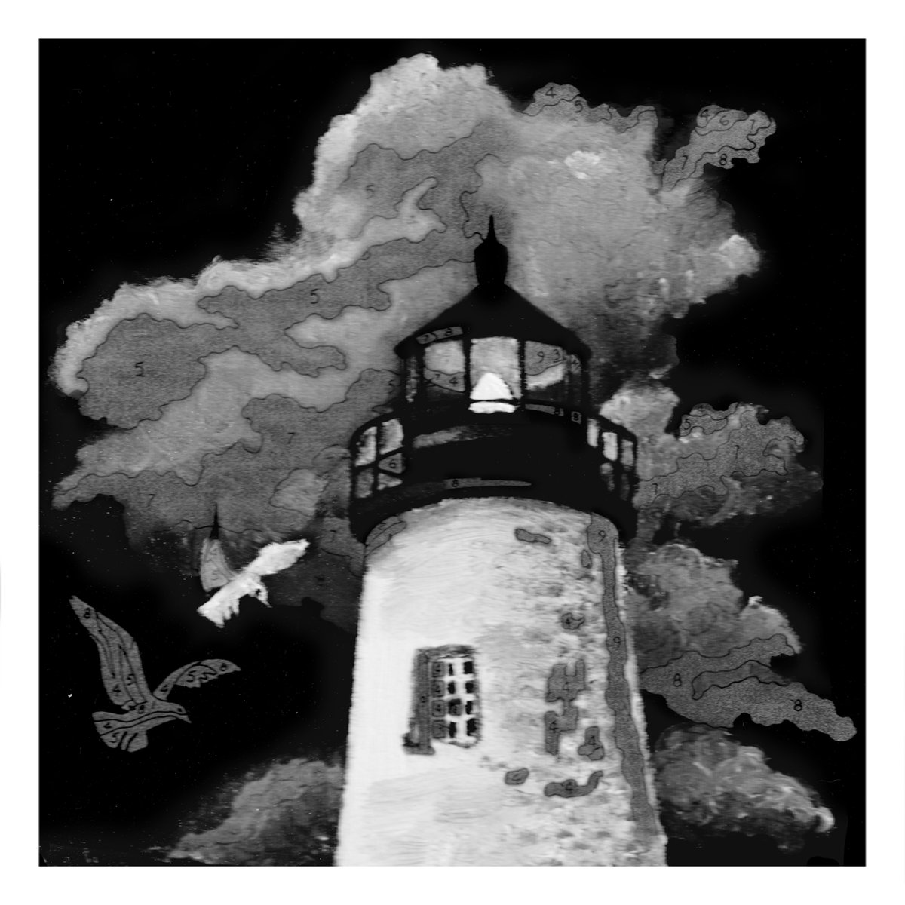
Candle on the Water is the second single by Miracle Musical (ミラクルミュージカル).
- Candle on the Water ★★★★★
6. Variations on a Cloud ★★★★★

Variations on a Cloud is the first single by Miracle Musical (ミラクルミュージカル).
- Variations on a Cloud ★★★★★
5. Hawaii Part II ★★★★★
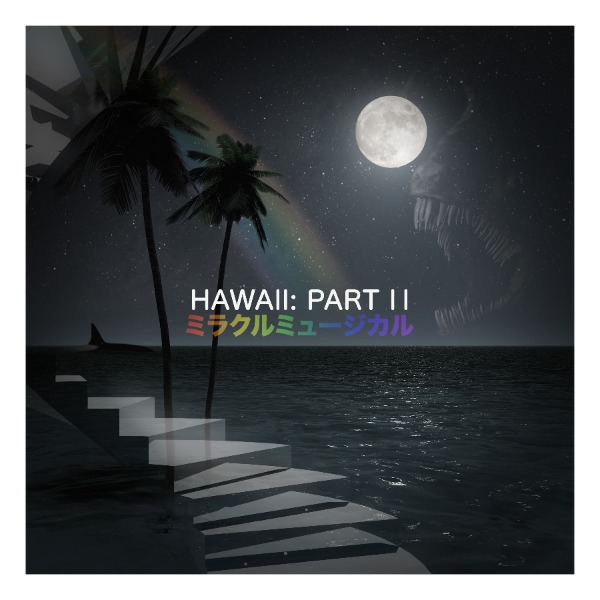
Hawaii Part II is the only album by Miracle Musical (ミラクルミュージカル) which is a side project spearheaded by band member Joe Hawley and with contributions from every band member except Andrew.
- Introduction to the Snow ★★★★★
- Isle Unto Thyself ★★★★★
- Black Rainbows ★★★★★
- White Ball ★★★★★
- Murders ★★★★★
- 宇宙ステーションのレベル7 ★★★★★
- The Mind Eletric ★★★★★
- Labyrinth ★★★★★
- Time Machine ★★★★★
- Stranded Lullaby ★★★★★
- Dream Sweet in Sea Major ★★★★★
4. Turn the Lights Off ★★★★★
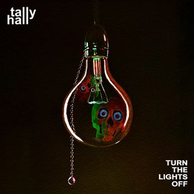
Turn the Lights Off is the 2nd single released by Tally Hall under Needlejuice Records.
- Turn the Lights Off ★★★★★
- Light & Night ★★★★★
3. Marvin's Marvelous Mechanical Museum (2005) ★★★★★
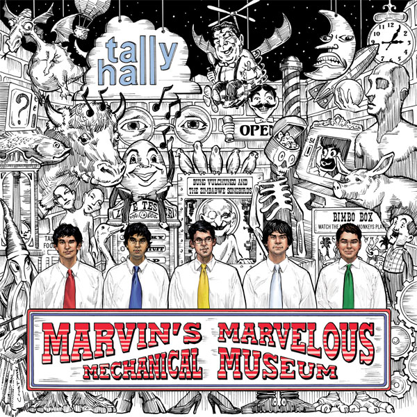
Marvin's Marvelous Mechanical Museum (2005) is Tally Hall's 1st LP.
- Good Day (2005) ★★★★★
- Greener (2005) ★★★★★
- Welcome to Tally Hall (2005) ★★★★★
- Taken for a Ride (2005) ★★★★★
- The Bidding (2005) ★★★★★
- Be Born (2005) ★★★★★
- Banana Man (2005) ★★★★★
- Just Apathy (2005) ★★★★★
- Spring and a Storm (2005) ★★★★★
- Two Wuv (2005) ★★★★★
- Haiku (2005) ★★★★★
- The Whole World and You (2005) ★★★★★
- 13/Ruler of Everything (2005) ★★★★★
- Hidden in the Sand (2005) ★★★★★
2. Marvin's Marvelous Mechanical Museum (2008) ★★★★★

Marvin's Marvelous Mechanical Museum (2008) is a remake of Tally Hall's 1st LP.
- Good Day ★★★★★
- Greener ★★★★★
- Welcome to Tally Hall ★★★★★
- Taken for a Ride ★★★★★
- The Bidding ★★★★★
- Be Born ★★★★★
- Banana Man ★★★★★
- Just Apathy ★★★★★
- Spring and a Storm ★★★★★
- Two Wuv ★★★★★
- Haiku ★★★★★
- The Whole World and You ★★★★★
- 13/Ruler of Everything ★★★★★
- Hidden in the Sand ★★★★★
- Mucka Blucka ★★★★★
- Dream ★★★★★
1. Good & Evil ★★★★★
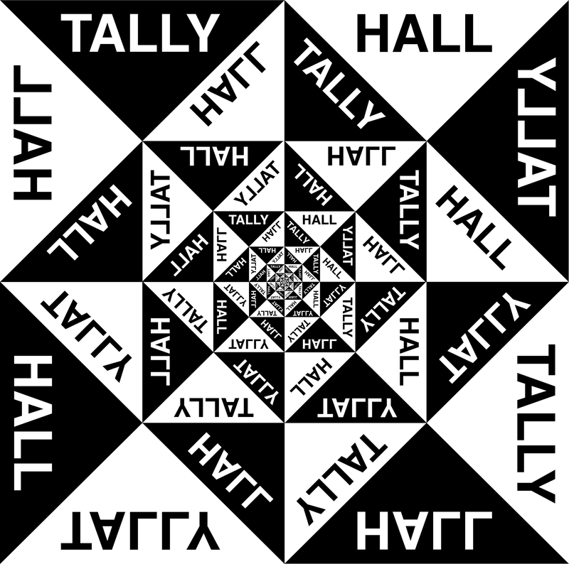
Good & Evil is Tally Hall's 2nd LP.
- Never Meant to Know ★★★★★
- & ★★★★★
- You & Me ★★★★★
- Cannibal ★★★★★
- Who You Are ★★★★★
- Sacred Beast ★★★★★
- Hymn For A Scarecrow ★★★★★
- A Lady ★★★★★
- The Trap ★★★★★
- Turn the Lights Off ★★★★★
- Misery Fell ★★★★★
- Out in the Twilight ★★★★★
- You ★★★★★
- Fate of the Stars ★★★★★